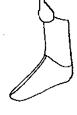
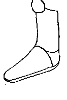
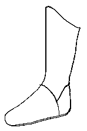
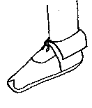

| Although these shoes are not "Medieval", I have included them as examples of what other shoes have existed in history. | |
|
 |
Turkish Cavalry Boots (Late 12th Century) (Speculative) |
|
 |
Persian Muza Riding Boots (Late 12th/Early 13th Century) (Speculative) |
|
 |
Persian Khuff Boots (Late 12th/Early 13th Century) (Speculative) |
|
 |
Madan slipper/shoes (Late 12th/Early 13th Century) (Speculative) |
Return to Contents
Footwear of the Middle Ages - Shoe Design List/Saracen (c1000-1300), by I. Marc
Carlson. Copyright 1996
This page is given for the free exchange of information, provided the author's name is
included in all future revisions, and no money change hands, other than as expressed in
the Copyright Page.